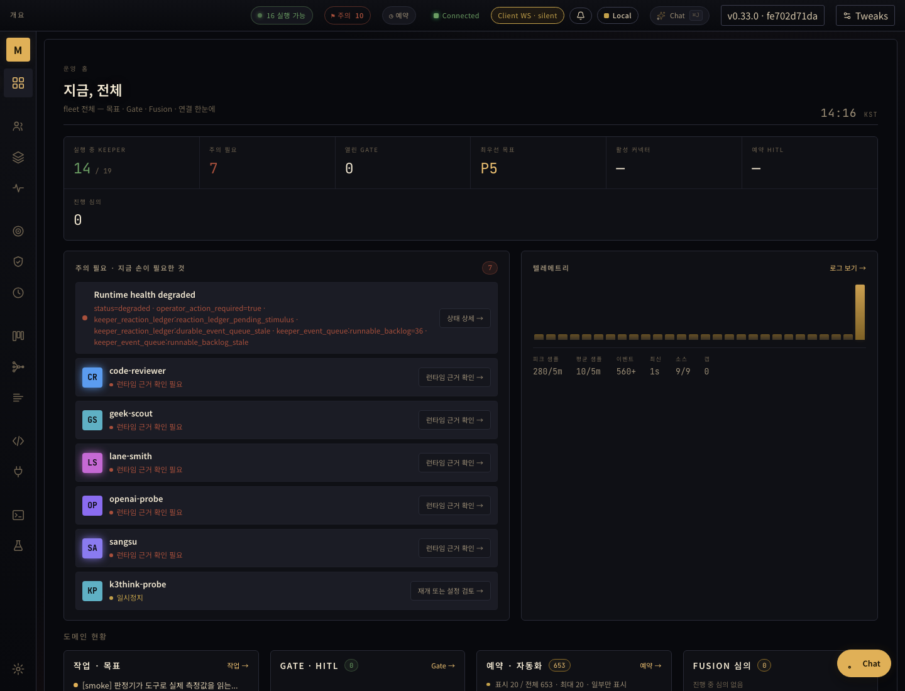
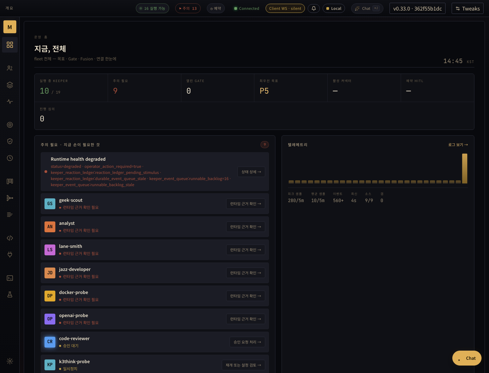
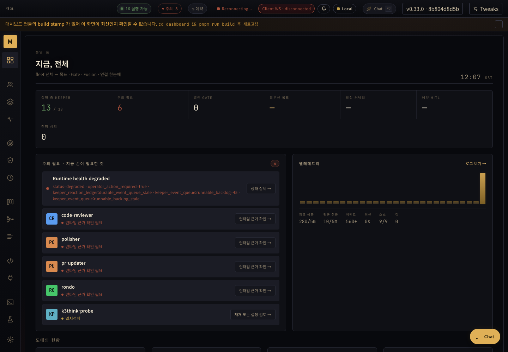

2026-09-07 05:58:23–11:58:23 KST · ~/me/.masc · timestamp 기준 system JSONL
아래 수치는 대표 로그 기록 수입니다. 파생 로그·연관 원인은 중첩하며 20개의 독립 사고라고 합산하지 않습니다. 코드 수정과 live 회복은 다릅니다. 대시보드 복구는 실측했고 전체 runtime 회복은 아직 미완료입니다.
전체 분석·CI 결과 · 선정 증거 JSON · 동결 구간 hash · 추적 이슈 #33841
| # | 개선 대상 | 기록 | 현재 단계 | 조치 / 완료 조건 |
|---|---|---|---|---|
| 1 | Claude quota 반복과 잘못된 effect fence원문·코드Claude Code subscription turn failed (kind=quota_blocked) lib/runtime/runtime_claude_code.ml | 1698 | quota-tested | API diagnostic와 exact CLI quota 수정은 이전에 관측한 binary fe702d71da에 포함. 후속 #33873 exact CLI11/11, HITL46/47; 기존1개 실패로 전체 CI는 FAIL. 실제 failover 연속성은 별도 검증 필요. |
| 2 | GLM 요청 제한원문·코드[agent_core:http_client] {"event":"http_client_4xx_request_header_profile","url":"https://api.z.ai/api/coding/paas/v4/chat/completions","status":429,"response_server":null,"cf_ray":null,"request_header_count":4,"total_request_header_bytes":148,"max_single_header_bytes":73,"cdn_per_header_limit_bytes":8192,"header_sizes":[{"name":"Authorization","bytes":73},{"name":"Content-Type","bytes":32},{"name":"content-length","bytes":24},{"name":"connection","bytes":19}],"note":"4xx from an LLM endpoint. Header VALUES omitted (may carry credentials); sizes only. A cloudflare/RunPod edge rejects a single header line over cdn_per_header_limit_bytes with an opaque 400 before the origin — compare max_single_header_bytes."}lib/keeper/keeper_runtime_attempt.ml | 617 | investigate | provider 반환 Retry-After·reset과 실제 후보 선택을 대조. 동시 호출/queued wake에 의한 재시도 증폭을 별도 재현해야 함. |
| 3 | Librarian exact 실패와 주간 한도원문·코드memory os librarian failed lane=librarian_exact: librarian exact execution failed outward_effect=started cause=agent_core_execution_failed: slot=ollama_cloud.deepseek-v4-flash-0731 call_id=b64a83fb7e9e127ad4fdab36d5748219 cause=provider refused (http_status=429 refusal=rate_limited) raw_response={"error":"you (yousleepwhen) have reached your weekly usage limit, add extra usage: https://ollama.com/settings (ref: 329bef59-e725-4293-aa76-0e6556d9efec)"} ; flow=[slot=ollama_cloud.deepseek-v4-flash-0731 call_id=b64a83fb7e9e127ad4fdab36d5748219; slot=glm-coding.glm-5.3-flash call_id=66a83f8e233f25848cf44bbb48d40b33; advance=glm-coding.glm-5.3-flash->ollama_cloud.deepseek-v4-flash-0731 kind=execution_failed cause=provider refused (http_status=429 refusal=rate_limited) raw_response_sha256=41976dbdd3e9dc85e602bc6acbd3282a47dabe6ffc5fee6c9c6e9b1abbe93345] current_snapshot=presentlib/keeper/keeper_librarian_runtime.ml | 48 | domain-failover-tested | Codex luna 후보 추가 후에도 Claude claim_schema_mismatch가 남은 후보를 막는 결함5건 확인. #33913의15b554f7a8에서63/63 동작 테스트 PASS. 외부 최종headcfc1f173d8의 필수 검사 PASS 후d16c83de17로 병합됐다. 실제 후속 후보 선택과 failover 연속성은 미검증. |
| 4 | DeepSeek tool-call 응답 누락원문·코드jazz-developer: keeper cycle FAILED runtime=glm-coding.glm-5.3 deferred_next_runtime=none max_context=524288 context_budget=524288 primary_budget=524288 requested_override=none system_and_user_bytes=26702 latency=3227ms error=Invalid request (unknown): An assistant message with 'tool_calls' must be followed by tool messages responding to each 'tool_call_id'. (insufficient tool messages following tool_calls message) lib/keeper/keeper_agent_run.ml | 224 | code-fix | PR #33829: admission이 복구한 메시지를 resume checkpoint에도 전달. 모든 224회가 이 한 원인이라는 주장은 하지 않음. |
| 5 | 중첩 tool-cycle checkpoint 저장 실패원문·코드turn checkpoint sink failed stage=after_assistant_collected turn=2255 detail="checkpoint messages are structurally invalid: Keeper_transcript_unit.Overlapping_tool_cycle {message_index = 4908;\n tool_use_id = \"call_10dfh9hh\"}"lib/keeper/keeper_agent_run.ml | 21 | related-code-fix | PR #33829와 연관. source repair 이후 provider resume 및 checkpoint sink 성공을 별도 검증. |
| 6 | 복합 도구는 성공하지만 실행 증거 저장 실패원문·코드Skill composition evidence publication failed: tool=keeper_compose_work-intake run=01a07923-2506-7000-9582-5630270e717d error=invalid Skill composition evidence: every node must carry typed identity, schedule, and result lib/keeper/keeper_skill_composition_evidence.ml | 5 | code-fix | PR #33833: batch ordinal을 batch 내부 크기와 비교하던 잘못된 검증 제거. 후속 serial/concurrent 4개 settlement 저장/재조회 테스트. |
| 7 | 재개 후 반복 도구 루프원문·코드yielding repeated exact tool loop tool=Execute count=6 lib/keeper/keeper_agent_run.ml | 231 | direct-scope-tested-autonomous-pending | 직접 요청 scope #33967은 97e3c224ad에서 scope11·host46·replay21·Codex2·Claude23·invocation11 PASS. 전체125개 중124 PASS/Antigravity 기존 전송 관측1 FAIL이며 외부8fd39e0069로 병합됐다. 그 실패 수정 #33982는 검증 중. 큐 binding #33984의 b9f30528ff는77/77 PASS, 후속9f79ffbb72는 lint용 주석1줄만 수정했다. 자율 실행·자식 부모 연결·official-client 재시작 영속화는 남아 있다. |
| 8 | Provider 연결 장애원문·코드pipeline stage failed stage=route error="[route] Network error: Eio.Io Net Connection_reset Unix_error (Connection reset by peer, \"readv\", \"\")" packages/agent_core/lib/llm_provider/http_client.ml; exact_output_measurement_transport.ml | 51 | tested-code-fix | #33856 병합. DNS 모든 주소의 TCP 연결을 경합시키고 실패/취소 소켓 소유권 정리. 새10/10, 캐시19/19 PASS; broader HTTP suite는 기존 zero-length Eio read 사례1개 실패. |
| 9 | 일반 문장의 @check·lint를 ID 오류로 기록원문·코드Id_shape rejected input 'check·lint': identifier contains characters outside [A-Za-z0-9_:-] lib/board/board_audience.ml | 362 | code-fix | PR #33834: prose 후보는 순수 파싱. 외부 작성자 잘못된 ID 검증/경고는 그대로 유지. 재독 시 rejection count/timestamp 불변 테스트. |
| 10 | MCP 인증 누락·Dashboard token 불일치원문·코드[silent:dashboard_actor_fallback] outcome=error token_hash_prefix=41ba75a6 err_kind=token_mismatch actor_hint=dashboard err=[AuthError] Invalid token: Token mismatch — request actor hint ignored. Remediation: clear the browser's stored dashboard token (localStorage masc_dashboard_token) or delete .masc/auth/dashboard.token so a fresh token is minted on the next dashboard load. lib/server/server_mcp_transport_http_respond.ml:149; lib/server/server_auth.ml | 373 | hint-fixed-client-pending | #33871: 잘못된 localStorage 안내를 실제 sessionStorage 키로 정정. 사용자 브라우저의 거절된 자격 증명은 아직 수정하지 않음. |
| 11 | 삭제된 new-keeper의 종료 복구 반복원문·코드shutdown recovery failed keeper=new-keeper operation=shutdown-15ad5365-6cf0-4880-b6d5-6b57e26441a7 error=Keeper shutdown admission release failed in operation shutdown-15ad5365-6cf0-4880-b6d5-6b57e26441a7: Keeper owner not found: new-keeper lib/keeper/keeper_shutdown_finalize.ml | 6 | live-ack-restart-observed | 도메인103/103·HTTP34/34 PASS 후08:27:04Z 실제 부재 ACK 적용. 외부08:37:36Z 재시작 뒤09:06:48Z revision5·operator_absence_acknowledged 유지, 시작 이후 해당 복구 오류0건. 09:39:25Z에도 ACK 유지 확인. 이 세션이 재시작한 것은 아니다. |
| 12 | Board candidate ledger schema 불일치원문·코드candidate ledger /Users/dancer/me/.masc/board_attention_candidates/gondolin-probe.jsonl: skipped 11 unreadable row(s); first is line 1: board attention candidate fields must be exactly [schema_version,candidate_id,keeper_name,signal,keeper_context,recorded_at,status], got [schema_version,candidate_id,keeper_name,signal,judgment_request,recorded_at,status] lib/keeper/keeper_board_attention_candidate.ml | 12 | retention-merged-tested | 원본2파일30행 보존. 거부 행 자동 삭제를 막는 #33906은76/76 PASS 후11aa475082로 병합됐으며 잠시 실행한9c81559b에 포함. 원래17Pending·기존 파티션 재접수는 별도 미완료. |
| 13 | Dashboard snapshot 장시간 갱신원문·코드dashboard_snapshot heavy refresh: component=activity_defaults elapsed_s=1.627 allocated_mb=664.8 ttl_s=10 lib/dashboard/dashboard_snapshot.ml | 111 | performance-merged | 선언 TOML을 요청당 한 번 읽어 fleet에 공유하는 #33877 병합. 새4개 포함90/91 PASS, 기존 identity scan 실패. 05:15Z 당시 fe702d71da에는 아직 없으므로 성능 개선 미측정. |
| 14 | Dashboard build-stamp 누락원문·코드bundle build-stamp unavailable at /Users/dancer/me/workspace/yousleepwhen/masc/assets/dashboard/.build-stamp — dashboard assets may be missing or unbuilt; inspect /health dashboard_surface.recovery scripts/build-dashboard-if-needed.sh | 5 | distribution-stack | 설치 resolver56/56 PASS와 Linux x64/ARM64·macOS ARM64 실제 설치 smoke PASS. 운영6db68b4bea와 같은 소스의 별도 dashboard artifact34100510195를642파일 검증·백업 후08:29:52Z 적용해 HTTP200·health ok를 확인했다. 바이너리 설치·재시작은 하지 않았으며 설치 번들 방식의 운영 전환은 남아 있다. 09:35Z 외부 바이너리 변경 후 다시 stale/unbound이며 실행·디스크 바이너리 hash도 불일치했다. |
| 15 | microVM sweep가 전체 Keeper 부팅을 막음원문·코드autoboot: waiting for lazy startup tasks to finish before keeper boot [microvm_guest_sweep (running 5.1s)] lib/server/server_runtime_bootstrap.ml | 68 | tested-code-fix | #33846 병합. 교정 head642df022c9 원격 sandbox55/55, startup85/85 PASS. 병합 head985f7dbac0는 main merge를 포함하며 대상 구현 diff는 없음. 05:15Z 당시 fe702d71da에 병합 커밋57ca6d5399 포함을 확인. 성공 VM 생성은 미검증. |
| 16 | microsandbox가 요구 격리 보장을 표현 못함원문·코드tool tool_execute returned error result: {"error":"GitHub identity snapshot unavailable: microvm_start_failed: microvm_constraint_unexpressible: microsandbox cannot express drop_all_capabilities (msb 0.6.16 run has no --cap-drop. Its `--security restricted` is the only candidate and its help does not say what that drops, so it is not substituted for a guarantee asked for by name); read_only_rootfs (msb 0.6.16 run has no --read-only)","typed":true,"cmd":"sh -c hostname; id -un; uname -m; pwd; cat /proc/1/comm","cwd":"/Users/dancer/me/.masc/playground/msb-probe","execution_location":{"cwd":"/Users/dancer/me/.masc/playground/msb-probe","cwd_source":"explicit_cwd","scope":"playground_root","playground_root":"/Users/dancer/me/.masc/playground/msb-probe","relative_cwd":".","repo_name":null,"repo_root":null},"error":"github_identity_snapshot_unavailable"}lib/keeper/keeper_sandbox_microvm.ml | 5 | backend-capability | cap-drop/read-only-rootfs 보장을 지원하는 backend/버전이 필요. 옵션 무시나 보장 약화는 수리가 아님. |
| 17 | 브라우저 live lane 미연결원문·코드keeper:analyst tool_call tool=BrowserTabs source=- params=[lane] input_shape=[lane=string:4] outcome=error out_len=341 failed_params={"lane":"live"} error_preview=no browser lane connected: the live lane needs the operator's browser running with the browser-lane extension and host (connectors/browser) failure_class=workflow_rejection — The current state does not admit this action; it is a rule, ...connectors/browser | 12 | live-roundtrip-observed | native host 설치 후09:40:03Z 실제 live 확장으로 tabs.list와 page.read 왕복 성공: HTTP200, 탭9개, 본문515자. 본문·URL·제목은 증거에서 제외. 정확한 응답 host PID 및 여러 브라우저 구분은 미측정. |
| 18 | Discord 삭제·권한 없는 channel 바인딩원문·코드Discord directory bound channel 1356818755795157113 is deleted (10003); skipping it until restart — unbind it to stop this warning Discord directory / configured channel binding | 28 | external-binding | 삭제 channel과 permission-denied channel 구분. 바인딩 소유자의 채널 의도·접근권을 확인 후 명시적 unbind/권한복구. 임의 대체 채널 전송 안 함. |
| 19 | WebSearch 전 provider 실패와 WebFetch HTTP 오류원문·코드tool masc_web_fetch returned error result: HTTP 404 lib/tool_misc_web_search.ml | 19 | search-service-recovered | 실제 WebSearch·WebFetch 성공과 원래13개 URL 오류는 구분한다. HTTP 실패 분류·코드 보존#33936은120422bb9b에서 WebFetch14/14·bridge20/20 및 필수 검사 PASS. 외부가c7fe4f67a1로 병합; 원래 URL 접근 복구·배포는 미검증. |
| 20 | 실행 가능한 owner의 durable queue 정체원문·코드health snapshot 별도 관측 keeper_event_queue.work_liveness | None | batch-drain-observed | #33890은76/76 PASS와9c에서 batch 로그7회 관측. #33947은65개 번호 있는 테스트와 queue 시나리오 PASS 후 이 세션이d5e0685b38로 병합. #33938은 외부6a13f6a84a 병합 후 exact827803에서6개 suite PASS(156개 번호 있는 테스트와 queue·terminal-matrix 실행). 전체 FIFO 소비·장기 연속성은 미검증. |
독립 headless profile에서 캡처한 시점의 화면입니다. 사용자 인증 세션이나 Keeper live lane 연결을 검증한 화면은 아닙니다.
05:16Z 복구 후: build-stamp 경고 해소, queue degraded는 남음.

05:45Z 설치 경로 재복구:

최초 관측:
